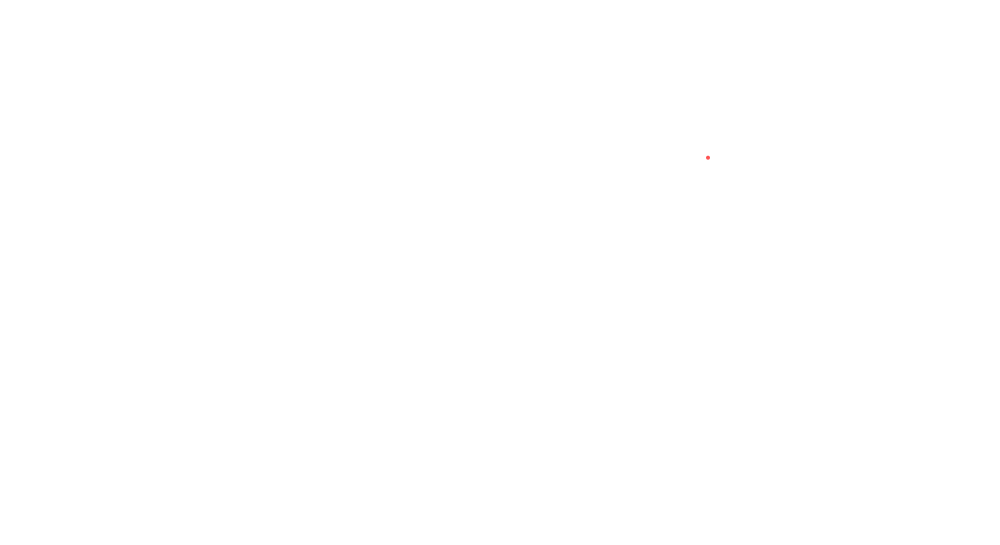
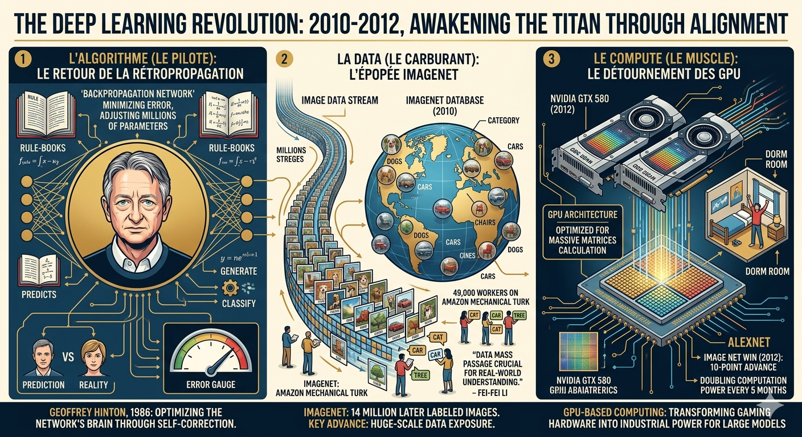
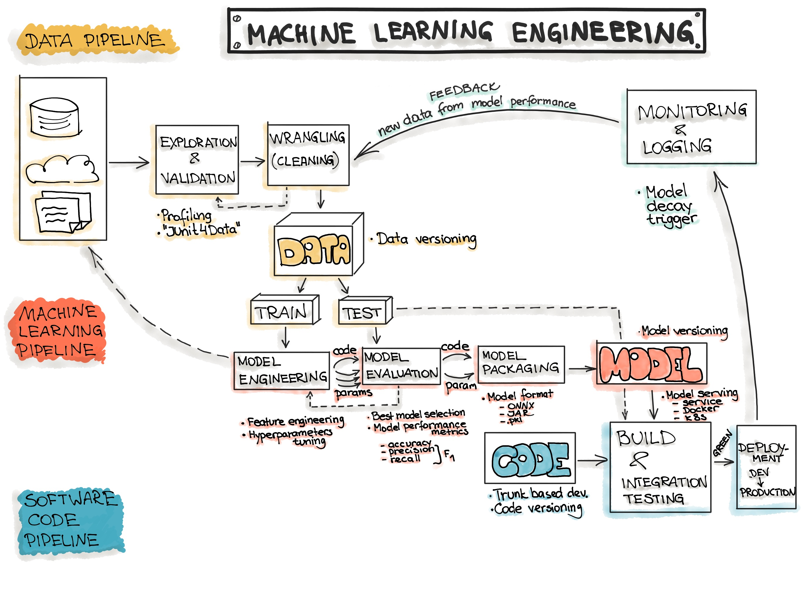
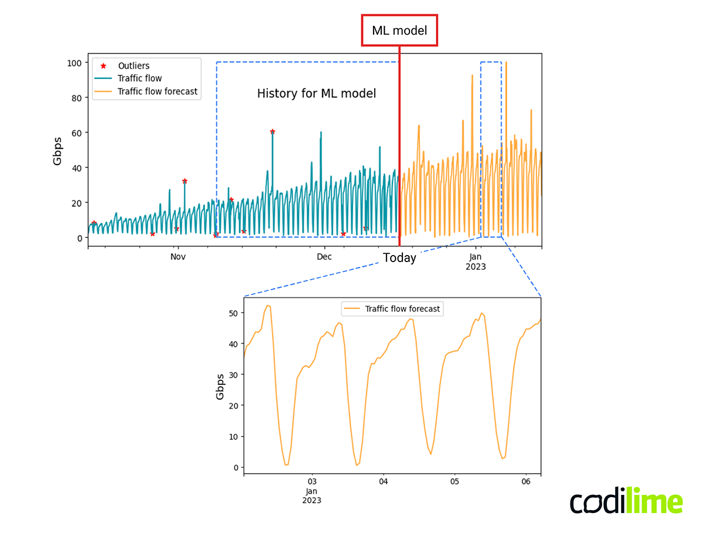
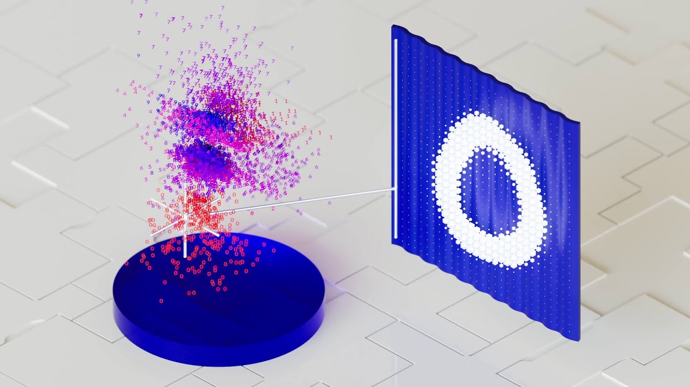

Chapitre 1 : Overview de IA
1. Le Rêve des Anciens : Infuser l’Âme dans l’Acier
Depuis que l’humanité a appris à forger le métal, elle n’a cessé de projeter ses propres facultés cognitives sur la matière inanimée. Cette quête d’un double artificiel prend racine dans un passé lointain, là où la magie et la technique se confondaient encore dans un imaginaire poreux.
L'Éveil des Mythes : De la Veine de Bronze au Mot Sacré
Dès l'Antiquité, cette fascination s'incarne dans la figure de Talos. Forgé par le dieu Héphaïstos pour protéger la Crète, ce géant de bronze est souvent considéré comme le premier « robot » mythologique. Sa conception préfigurait déjà les systèmes énergétiques modernes : il était animé par une veine unique de fluide divin, scellée par un simple clou au talon.
Plus tard, au XVIe siècle, cette ambition prend une dimension mystique avec la légende du Golem de Prague. Façonné dans l'argile par le Rabbin Loew, cet être s'animait grâce au mot Emet (Vérité) inscrit sur son front. Cependant, sa nature purement programmable apparaissait lors de sa désactivation : en effaçant le « E », le mot devenait Met (Mort). Cette métaphore souligne une vérité fondamentale de l'IA contemporaine : l'intelligence artificielle n'est, par essence, qu'un code modifiable de l'extérieur.
L'Ère de la Mécanique : Simuler le Vivant
Au XVIIIe siècle, le rêve se rationalise. L'heure n'est plus à la magie, mais à la mécanique de précision. En 1738, Jacques de Vaucanson stupéfie ses contemporains avec son Canard Digérateur. Capable de boire, de manger et de simuler une digestion chimique, cet automate — bien que réduit par certains à un simple assemblage de ressorts — prouvait qu'il était possible d'externaliser des fonctions biologiques complexes vers une structure artificielle.
La Révolution Algorithmique : Vers la Mécanisation de la Pensée
C’est toutefois au XIXe siècle que se produit la rupture conceptuelle majeure avec le duo formé par Charles Babbage et Ada Lovelace. Ensemble, ils jettent les bases de la « mécanisation de la pensée ». Babbage conçoit l'Analytical Engine (1837), la première machine universelle. Son architecture était visionnaire : elle séparait physiquement l'unité de calcul (le Mill) de l'unité de stockage (le Store), une structure binaire que l'on retrouve encore aujourd'hui dans nos processeurs.
C'est dans ce contexte qu'Ada Lovelace, surnommée « l'Enchanteresse des Nombres », va plus loin que la simple mécanique. En rédigeant le premier algorithme théorique pour calculer les nombres de Bernoulli, elle perçoit le potentiel créatif de la machine, imaginant qu'elle pourrait un jour composer de la musique ou peindre. Elle pose néanmoins une limite éthique et philosophique toujours d'actualité : la machine, aussi complexe soit-elle, n'a aucune « prétention à originer » quoi que ce soit. Elle n'est que le reflet de l'intention de son concepteur.
Résumé : Depuis que l'homme sait forger l'outil, il caresse un rêve fou : créer une machine à son image. Pas seulement un automate qui répète un geste, mais une entité capable de voir (Computer Vision) pour comprendre son environnement, d'entendre (Sound Processing) pour réagir aux cris du monde, et de parler (NLP) pour échanger avec son créateur. Ce rêve, c’est celui de l’Intelligence Artificielle : transformer le silicium en un miroir de notre propre esprit.

2. Le Mur de la Logique : Quand les Règles ne Suffisent Plus
Alors que le XIXe siècle avait posé les bases du calcul, l’année 1956 marque l’acte de naissance officiel de l’Intelligence Artificielle lors de la conférence de Dartmouth. Portés par un optimisme sans précédent, les pionniers de l'époque sont convaincus que l'intelligence humaine n'est qu'un immense jeu d'échecs codifiable. Ils imaginent alors qu'en quelques années seulement, des machines pourront raisonner parfaitement en manipulant des symboles et des règles logiques.
L'Ère de l'IA Symbolique : Le Monde en "Si-Alors"
Cette approche, dite déterministe, repose sur une intuition simple : pour qu'une machine comprenne le monde, il suffit de lui injecter la connaissance humaine sous forme de manuels d'instructions géants. C'est l'époque des moteurs d'inférence, où l'on tente de coder le diagnostic médical ou la compréhension du langage à travers des milliers de règles de type « Si-Alors ».
Cette période voit naître des succès industriels concrets, prouvant que la machine peut surpasser l'humain dans des tâches de niche :
- MYCIN (1972) : Ce système expert, capable d'identifier des infections bactériennes, atteint un taux de réussite de 69 %. Bien que légèrement inférieur aux experts humains (80 %), il révolutionne le domaine en introduisant pour la première fois la gestion mathématique de l'incertitude dans le diagnostic.
- XCON/R1 (1980) : Utilisé par l'entreprise DEC pour configurer des systèmes informatiques complexes, ce programme permet d'économiser des millions de dollars par an en éliminant les erreurs de configuration humaine.
Le Paradoxe de Moravec : La Chute du Château de Cartes
Cependant, cet enthousiasme se heurte bientôt à une réalité déconcertante. En 1988, le chercheur Hans Moravec formule un constat qui va ébranler la discipline : il est relativement facile de faire effectuer à un ordinateur des tâches de haut niveau (comme gagner aux échecs contre Kasparov en 1997), mais il est extrêmement difficile de lui donner les capacités sensorielles et motrices d'un enfant d'un an.
C'est le Paradoxe de Moravec : la machine excelle en logique pure, mais échoue lamentablement à marcher sur un trottoir encombré ou à saisir un objet avec dextérité. Les systèmes symboliques se révèlent incapables de percevoir l'ironie, de s'adapter à un changement contextuel mineur ou de posséder ce "sens commun" si naturel chez l'humain.
Les Hivers de l'IA : Le Gel des Ambitions
Face à cette incapacité à coder l'implicite et la fluidité du monde réel, le château de cartes logique finit par s'effondrer. Les promesses non tenues entraînent un retrait massif des investisseurs et des gouvernements. Ce sont les "Hivers de l'IA" : des périodes de stagnation marquées par un gel des financements et un scepticisme généralisé.
Le monde réalise alors que l'intelligence ne peut pas être simplement "insufflée" par des règles rigides ; elle doit être apprise au contact de la complexité. Cette crise profonde préparera le terrain pour la révolution suivante : celle des données et de l'apprentissage automatique.
Résumé : Au début, nous avons cru que l'intelligence était une simple partition de musique. Il suffisait d'écrire chaque note : « Si tu vois ceci, fais cela ». C’était l’ère de l’IA Symbolique. Mais nous avons vite déchanté. Le monde réel n’est pas une partition, c’est un chaos magnifique et imprévisible. Comment écrire une règle pour chaque reflet de lumière sur un visage? Comment coder l'ironie dans une phrase? Nous avons réalisé que les règles humaines sont trop rigides pour la fluidité du réel. L'intelligence ne pouvait pas être dictée ; elle devait être extraite.

3. L'Étincelle Théorique du Grand Renversement
Parallèlement aux balbutiements de l'IA Symbolique, une voix dissidente s'élève, pressentant les limites d'une approche purement déterministe. En 1950, quatre ans seulement avant sa disparition tragique, Alan Turing publie un article fondateur, Computing Machinery and Intelligence, qui propose une rupture radicale avec la programmation exhaustive. Plutôt que de s'évertuer à coder un esprit adulte figé et omniscien, Turing suggère une voie plus humble et organique : s'inspirer du développement humain. Ce texte visionnaire déplace le débat métaphysique de « Qu'est-ce que la pensée ? » vers un critère pragmatique : « De quoi une machine est-elle capable ? », posant ainsi les jalons du Machine Learning actuel.
Le Critère Opérationnel : Du Jeu de l'Imitation à l'Esprit d'Enfant
Pour contourner la question insoluble de la conscience, Turing invente le Jeu de l'Imitation, aujourd'hui célèbre sous le nom de Test de Turing. Le principe est simple : si un interrogateur humain, après cinq minutes d'échange textuel, ne peut distinguer la machine de l'homme, l'intelligence de l'IA est jugée opérationnelle.
Mais comment atteindre ce niveau ? C’est ici que réside la véritable intuition de Turing : le concept de « Child Mind » (l'Esprit d'enfant). Plutôt que de construire une encyclopédie de règles rigides, il propose de créer un système doté de peu de processus initiaux — le « matériel héréditaire » — et de le soumettre à une éducation continue.
Les Mécanismes de l'Éveil : Renforcement et Supercriticité
Pour éduquer cet esprit artificiel, Turing imagine, dès 1950, des concepts qui deviendront les piliers de l'IA moderne :
- L’Apprentissage par Renforcement : Il esquisse une méthode de « carotte et bâton » (récompense et punition), permettant à la machine de modifier ses propres processus internes en fonction des résultats obtenus, sans intervention humaine directe sur son code.
- L’Analogie de la Pile Atomique : Turing utilise une métaphore puissante pour décrire l'émergence de l'intelligence. Une machine devient « supercritique » lorsqu'une idée injectée déclenche une cascade de théories secondaires, dépassant ainsi largement les instructions initiales de son créateur.
La Réponse à Ada Lovelace : La Surprise Logique
Enfin, Turing s'attaque directement à l'objection formulée un siècle plus tôt par Ada Lovelace, qui affirmait que la machine ne pouvait « rien originer ». Pour Turing, cette vision est limitée. Il soutient avec conviction que les machines peuvent nous « surprendre » par des conséquences logiques non anticipées de leurs règles internes. L'IA n'est plus un simple automate exécutant des ordres, mais un système dynamique capable d'apprentissage et d'émergence.
Résumé : C'est alors qu'un changement de paradigme s'opère, porté par des visionnaires comme Alan Turing. On cesse de donner des ordres pour donner des exemples. C’est la naissance du Machine Learning. L’idée est révolutionnaire : au lieu de programmer la formule, on laisse la machine la découvrir. C'est l'ordinateur qui, en observant des milliers de données, trace ses propres chemins logiques. Mais cette science, bien qu’élégante sur le papier, va rester "endormie" pendant des décennies. Elle possédait le cerveau, mais il lui manquait le corps.

4. L'Héritage : Une science ancienne qui a trouvé sa puissance aujourd'hui : Le Réveil des Trois Piliers
Pendant des décennies, le Deep Learning est resté une « science endormie », reléguée au rang d'impasse théorique par manque de moyens. Mais entre 2010 et 2012, un alignement sans précédent se produit, transformant les modèles mathématiques de 1986 en une force industrielle dévastatrice. La révolution ne vient pas d'une nouvelle formule magique, mais de la rencontre brutale entre un algorithme ancien, un carburant massif et un muscle technologique inattendu.
1. L'Algorithme (Le Pilote) : Le Retour de la Rétropropagation
Tout commence par la renaissance de la rétropropagation du gradient, théorisée par Geoffrey Hinton dès 1986. Ce mécanisme permet à la machine d'apprendre de ses erreurs : à chaque cycle, elle calcule l'écart entre sa prédiction et la réalité, puis ajuste ses millions de paramètres internes pour minimiser cette erreur. Ce qui était un calcul fastidieux devient soudain la clé de l'optimisation universelle.
2. La Data (Le Carburant) : L'Épopée ImageNet
Mais un pilote sans carburant ne va nulle part. C'est ici qu'intervient Fei-Fei Li. Comprenant que l'intelligence ne naît pas de l'algorithme seul mais de l'exposition au monde, elle crée ImageNet. En mobilisant 49 000 travailleurs via Amazon Mechanical Turk, elle parvient à étiqueter manuellement 14 millions d'images. Ce passage à l'échelle massive s'avère plus crucial que l'amélioration des modèles eux-mêmes : pour la première fois, la machine a assez d'exemples pour "comprendre" la diversité du réel.
3. Le Compute (Le Muscle) : Le Détournement des GPU
Le dernier verrou saute grâce à une intuition de génie : les processeurs de cartes graphiques (GPU), conçus pour le rendu des jeux vidéo, sont structurellement parfaits pour les calculs matriciels massifs des réseaux de neurones. En 2012, le modèle AlexNet pulvérise la concurrence lors du concours ImageNet, avec une avance de 10 points sur le second. Fait marquant : ce moteur surpuissant a été entraîné sur seulement deux cartes NVIDIA GTX 580 dans une chambre d'étudiant. Depuis ce jour, la puissance de calcul allouée aux grands modèles double désormais tous les 5 mois.
Résumé : Pourquoi cette science ancienne n'a-t-elle trouvé sa pleine puissance qu'aujourd'hui? Parce qu'un moteur ne tourne pas sans carburant ni compression. Il a fallu attendre la réunion de trois forces : La Data (Le Carburant) : La numérisation massive de nos vies. Le Compute (Le Muscle) : La puissance foudroyante des processeurs modernes. Les Algorithmes (Le Pilote) : La maturité des modèles mathématiques. Aujourd'hui, ces piliers sont enfin alignés. Ce qui était une théorie de laboratoire est devenu une industrie de précision.

5. L’Âge de la Forge Industrielle : Du Laboratoire à la Chaîne de Production
Une fois le « muscle » technologique acquis et le « carburant » des données sécurisé, l'intelligence artificielle opère sa dernière mue. Elle cesse d'être une curiosité académique fascinante pour devenir une infrastructure rigoureuse, une véritable chaîne de production appelée MLOps (Machine Learning Operations) ou AIops ou DLops .... Comme dans une forge moderne, l'enjeu n'est plus seulement de créer une étincelle d'intelligence, mais d'apprendre à purifier la donnée brute en continu pour en extraire une valeur fiable, capable d'agir en production sans faillir. Cette normalisation radicale permet de passer des simples chatbots expérimentaux à des systèmes critiques qui prédisent des pannes industrielles massives ou génèrent des œuvres artistiques haute-fidélité.
1. L’Architecture MLOps : La Forge Numérique
L'industrialisation repose sur un pipeline standardisé et automatisé, garantissant la qualité et la reproductibilité du modèle, de sa conception à son déploiement :
- Collecte et Nettoyage : La donnée brute est ingérée et purifiée automatiquement pour éliminer le bruit.
- Entraînement Reproductible : Le modèle est entraîné dans des environnements isolés et standardisés (conteneurs Docker), assurant que le résultat est identique, quel que soit le serveur.
- Monitoring Continu : Une fois déployé, le système est sous surveillance constante pour détecter la « dérive des données », c'est-à-dire le moment où le monde réel change et où le modèle, devenu obsolète, commence à se tromper.

2. L'IA en Action : Prédire, Classifier, Générer
Cette rigueur opérationnelle libère la puissance de l'IA dans tous les secteurs stratégiques, illustrée par des cas réels d'utilisation :
1. La Révolution de la Prédiction : De la Réaction à l'Anticipation
Si l'informatique classique se contentait de traiter le présent ou de compiler le passé, l'intelligence artificielle opère une rupture fondamentale : elle devient une "boule de cristal" mathématique. Prédire, dans le contexte de l'IA, c'est utiliser la force statistique pour réduire l'incertitude du futur. Cette capacité se manifeste sous deux formes principales : la prédiction d'une valeur ponctuelle et la projection dans le temps.
A. La Prédiction de Valeur (Régression Statistique)
Ici, l'IA analyse un ensemble de caractéristiques à un instant T pour estimer un résultat numérique précis. C'est la capacité de l'algorithme à comprendre les corrélations invisibles entre des facteurs hétérogènes.
Exemple : L'estimation boursière
Imaginez un modèle entraîné sur des milliers de journées de trading. Il a appris que le volume d'échange et le sentiment des informations influencent le prix final.
Le Dataset d'entraînement (Le passé)
| Volume d'échange | Sentiment Media (-1 à 1) | Taux d'intérêt | Variation du Prix (Sortie) |
|---|---|---|---|
| Élevé | 0.7 (Positif) | 2.5% | + 1.2% |
| Faible | -0.4 (Négatif) | 2.6% | - 0.8% |
L'Inférence (La prédiction du jour)
| Volume d'échange | Sentiment Media | Taux d'intérêt | Variation attendue (IA) |
|---|---|---|---|
| Très Élevé | 0.9 (Euphorie) | 2.4% | [ ? ] → L'IA prédit +1.8% |
Applications réelles : Ce mécanisme est le cœur du Trading Haute Fréquence (ex: Renaissance Technologies) où des millions de dollars sont engagés sur des prédictions calculées en microsecondes. On retrouve cette logique dans le Marketing Prédictif, comme chez Starbucks, pour prédire le montant exact qu'un client est prêt à dépenser.
B. La Prédiction Temporelle (Forecasting & Séries Temporelles)
Contrairement à la régression simple, cette forme de prédiction traite des données séquentielles. L'IA analyse l'historique d'un signal (la "mémoire" du système) pour en projeter la trajectoire future. C'est l'outil de précision utilisé pour calculer la RUL (Remaining Useful Life), c'est-à-dire le temps de vie restant avant une défaillance critique.
Exemple : La Maintenance Prédictive (Série Temporelle)
Imaginez un capteur sur une turbine. L'IA ne s'alarme pas d'une température haute isolée, mais de la vitesse d'augmentation et de la corrélation entre les signaux sur une période donnée.
Le flux de données dynamique (Time Steps)
| Temps (t) | Température | Vibration | Tendance Détectée | Prédiction RUL (IA) |
|---|---|---|---|---|
| t0 | 70°C | 40 Hz | Régime nominal | 500 cycles (Sain) |
| t+50 | 75°C | 55 Hz | Augmentation lente | 350 cycles (Usure) |
| t+100 | 88°C | 95 Hz | Accélération thermique | 10 cycles (CRITIQUE) |
L'analyse de l'IA : Au temps t+100, l'IA ne dit pas simplement "il fait chaud". Elle compare ce point aux 100 précédents et conclut que la courbe d'usure est devenue exponentielle. Elle prédit l'effondrement du système dans 10 cycles, bien avant que la machine ne s'arrête réellement.

2. La Révolution de la Classification : Trier la Complexité du Réel
Si la prédiction cherche à deviner une valeur numérique future, la classification consiste à "ranger" le monde dans des catégories. C'est la capacité de l'IA à agir comme un expert infatigable qui analyse des milliers de signaux pour rendre un verdict précis : Sain ou Malade ? Authentique ou Frauduleux ? Obstacle ou Route ? On distingue deux niveaux de maturité dans cette discipline : la décision binaire et la catégorisation multidimensionnelle.
A. La Classification Binaire (La Décision Oui/Non)
C'est la forme la plus pure de l'intelligence discriminante. L'IA apprend à tracer une frontière (une "frontière de décision") entre deux états opposés. Elle ne calcule plus une probabilité de prix, mais une probabilité d'appartenance à un groupe.
Exemple : Le Diagnostic Médical
Un modèle de Vision par Ordinateur analyse des images de radiologie. Il a appris à distinguer les tissus sains des cellules suspectes en fonction de la densité et de la forme.
Le Dataset d'entraînement (Historique clinique)
| Densité Cellulaire | Forme des contours | Âge de la lésion | Diagnostic (Sortie) |
|---|---|---|---|
| Très Haute | Irrégulière | 3 mois | Positif (Malin) |
| Faible | Lisse / Ronde | 1 mois | Négatif (Bénin) |
L'Inférence (Nouveau patient)
| Densité Cellulaire | Forme des contours | Âge de la lésion | Verdict de l'IA |
|---|---|---|---|
| Haute | Irrégulière | 2 mois | [ ? ] → Alerte : Positif |
Applications réelles : En 2023, la FDA a franchi un cap historique en approuvant 223 dispositifs médicaux basés sur l'IA. Ces systèmes ne remplacent pas le médecin, mais agissent comme un "super-filtre" capable de détecter des micro-signaux cancéreux invisibles à l'œil humain, réduisant ainsi les faux négatifs de manière drastique.
B. La Classification Multiclasse (L'Expertise Contextuelle)
Ici, l'IA ne choisit pas entre deux options, mais doit identifier la nature exacte d'un signal parmi une multitude de catégories possibles. C'est l'outil indispensable pour surveiller des environnements complexes où tout bouge en même temps.
Exemple : La Surveillance des Marchés Financiers
L'IA analyse des flux de transactions pour classer le comportement d'un acteur du marché.
Le flux de données (Signaux faibles)
| Fréquence d'achat | Pays d'origine | Volume atypique | Catégorie de signal (Sortie) |
|---|---|---|---|
| 1000/seconde | Paradis Fiscal | Oui | Suspicion de Fraude |
| 1/heure | France | Non | Activité Normale |
| 50/minute | USA | Oui | Spéculation Agressive |
Projets et domaines d'application :
- Finance (AMF - France) : L'Autorité des Marchés Financiers utilise ces modèles pour traquer les manipulations de cours et les arnaques sur le web. L'IA classe automatiquement des millions de messages et de transactions pour isoler uniquement les comportements "toxiques".
- Cybersécurité : Les antivirus modernes ne cherchent plus une signature de virus connue (statique). Ils classifient le comportement d'un logiciel : si un programme commence à chiffrer des fichiers à haute vitesse, l'IA le classe immédiatement comme "Ransomware" et bloque le système.
3. La Révolution de la Génération : Synthétiser et Extrapoler le Réel
Jusqu'ici, nous avons vu l'IA analyser ce qui existe (prédire une valeur ou classer un objet). La génération marque une rupture conceptuelle majeure : l'IA ne se contente plus d'étiqueter le monde, elle apprend à en modéliser la structure profonde pour créer des données totalement inédites qui n'ont jamais existé, mais qui sont statistiquement "crédibles".
Le Cœur Scientifique : L'Espace Latent et la Distribution
Pour comprendre la génération, il faut imaginer que l'IA ne mémorise pas des images ou des sons, mais qu'elle apprend la loi de probabilité qui régit leur existence. Elle projette l'ensemble des données d'entraînement dans un espace latent (souvent visualisé comme un nuage de points complexe ou une "variété" mathématique).
Figure : Représentation intuitive d’un espace latent et de ses zones de densité pour un jeu de données d’images de chiffres.

L'Apprentissage de la Distribution : Chaque point dans ce nuage représente une donnée réelle. L'IA apprend à cartographier les "zones de densité" où les données sont valides.
L'Extrapolation et l'Invention : La force de la génération réside dans sa capacité à explorer les zones "vides" de cet espace. En échantillonnant (sampling) de nouveaux points au sein de cette distribution, l'IA peut interpoler entre deux concepts (ex : mélanger deux styles) ou extrapoler pour créer une donnée qui respecte les règles du monde réel sans en être une copie.
Cas d'Application : Quand la Machine "Imagine"
Cette capacité à extrapoler à partir d'une distribution de données ouvre des perspectives industrielles et scientifiques sans précédent :
A. Génération d'Imagerie de Précision (Images Laser et Médicales)
Dans des secteurs de pointe, on utilise l'IA pour générer des images de synthèse haute-fidélité (comme des scans laser ou des radiographies) pour entraîner d'autres modèles là où les données réelles sont rares ou coûteuses.
Exemple : Générer des milliers de variantes de défauts sur une pièce métallique captée par laser pour "apprendre" à un système de détection à reconnaître des pannes qu'il n'a encore jamais vues physiquement.
B. Synthèse de Son et de Signal (Audio & Acoustique)
L'IA générative traite le son non pas comme un simple enregistrement, mais comme une distribution de fréquences temporelles.
Exemple : La synthèse vocale (Text-to-Speech) ou la composition musicale. L'IA peut générer une voix humaine avec toutes ses nuances émotionnelles en extrapolant à partir d'un échantillon réduit, ou recréer des environnements sonores 3D immersifs pour la simulation.
C. Conception de Nouvelles Structures (Molécules et Matériaux)
C'est sans doute l'application la plus révolutionnaire. En apprenant la distribution des molécules stables, l'IA peut en "inventer" de nouvelles qui possèdent des propriétés spécifiques (résistance à la chaleur, efficacité énergétique).
Exemple : Dans la recherche pharmaceutique, l'IA extrapole à partir des bases de données chimiques connues pour générer des candidats-médicaments totalement nouveaux, accélérant des cycles de recherche qui prenaient autrefois des décennies.
D. Création de Contenu et Personnalisation (Marketing & Design)
L'IA peut générer des visuels, des textes publicitaires ou des interfaces web uniques pour chaque utilisateur en fonction de son profil.
Exemple : Starbucks ou Netflix génèrent des recommandations et des visuels d'offres qui n'existent pas sous forme statique, mais qui sont synthétisés à la volée pour correspondre exactement à ce que la distribution statistique du client suggère comme étant son "point d'intérêt".
Ce qu'il faut retenir : La génération est le passage de l'IA analytique à l'IA synthétique. En maîtrisant la distribution des données, nous passons d'un outil qui observe le monde à un outil qui l'étend en proposant des solutions, des images et des sons qui respectent les lois du réel tout en étant purement originaux.
C'est ici que l'on touche au rêve de Turing : la machine ne se contente plus de répondre, elle commence à "surprendre" par sa créativité logique.
4. L'Orchestration : La Convergence des Facultés
Dans le monde réel, un système d'intelligence artificielle se contente rarement d'une seule tâche. Les architectures les plus puissantes sont dites multitâches : elles orchestrent simultanément la prédiction et la classification pour comprendre un environnement complexe.
Le meilleur exemple de cette convergence est la Vision par Ordinateur (Computer Vision), et plus particulièrement la Détection d'Objets.
L'Exemple du Système de Détection (Type YOLO)
Lorsqu'un algorithme analyse une image pour détecter des défauts sur une route ou identifier des véhicules, il effectue deux opérations cognitives en une fraction de seconde :
La Régression (Prédire) : L'IA doit prédire les coordonnées exactes (x, y, w, h) d'un cadre (Bounding Box) autour de l'objet. C'est une prédiction de valeurs numériques.
La Classification : Une fois l'objet localisé, l'IA doit décider s'il s'agit d'un "Nid-de-poule", d'une "Fissure" ou d'une "Signalisation".
Le Dataset Multitâche (L'apprentissage complexe)
| Image Input | Pixels / Tenseurs | Sortie 1 : Localisation (Prédire) | Sortie 2 : Nature (Classifier) |
|---|---|---|---|
| Photo Route A | [0.2, 0.5, ...] |
[x=120, y=450, w=50, h=30] |
Nid-de-poule |
| Photo Route B | [0.1, 0.8, ...] |
[x=300, y=150, w=100, h=10] |
Fissure longitudinale |
L'Inférence (L'action en production)
| Nouvelle Image | Analyse de l'IA |
|---|---|
| Flux vidéo temps réel | [ ? ] → L'IA dessine un cadre (Prédit) ET nomme l'obstacle (Classe) |
Cas d'usage industriel : L'Inspection d'Infrastructures — C'est ici que le MLOps prend tout son sens. Des entreprises comme Colas ou des gestionnaires de réseaux électriques utilisent ces systèmes combinés. L'IA ne se contente pas de dire "il y a un problème" (Classification) ; elle prédit où il se trouve précisément sur l'image et peut même, dans un troisième temps, prédire la vitesse de dégradation du défaut (Prédiction temporelle).
Vers des Systèmes Autonomes
Cette orchestration atteint son paroxysme dans les Véhicules Autonomes ou les Drones d'inspection :
- Classifier les obstacles (piéton, voiture, trottoir).
- Prédire la trajectoire future du piéton (où sera-t-il dans 2 secondes ?).
- Générer la commande de freinage ou de changement de direction optimale.
Résumé : Nous ne sommes plus de simples programmeurs de codes statiques. Nous sommes les tuteurs de systèmes qui évoluent. La machine n'exécute plus, elle apprend. Elle ne subit plus, elle interprète. Bienvenue dans le monde des machines qui apprennent.